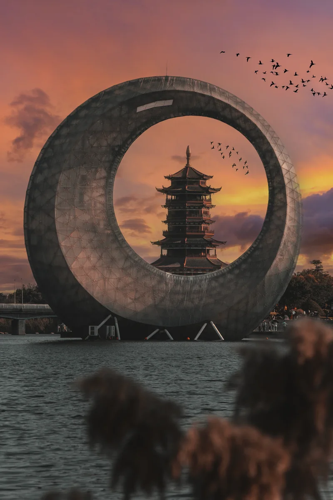

Lumière
Je travaille les heures bleues, les couchers de soleil et les brumes qui donnent au paysage sa profondeur.
Photographe de paysages — Pékin
Villes, rivières, littoraux du Bénin et lumières rares : je compose des images élégantes entre architecture, nature et temps suspendu.
Sélection
Les images les plus marquantes, choisies pour leur lumière, leur composition et leur force visuelle.
Séries
Deux regards complémentaires, entre présence humaine et nature délicate.
Approche
Chaque image est le résultat d'une préparation longue, d'une observation patiente et d'une composition précise.
Je travaille les heures bleues, les couchers de soleil et les brumes qui donnent au paysage sa profondeur.
Lignes, reflets, architecture et nature : je construis l'image avant même de déclencher.
Attendre le bon instant fait partie du travail. La lumière décide, je l'accompagne.
Prestations
Expéditions, commandes, tirages et accompagnement éditorial pour les marques, les institutions et les collectionneurs.
Un séjour photographique conçu autour d'un lieu, d'une saison et d'une lumière précise.
Une série dédiée à votre marque, votre espace ou votre récit institutionnel.
Des impressions limitées, préparées avec soin pour les collectionneurs et les galeries.
Des visuels prêts à publier pour la presse, le web et les campagnes de communication.

À propos
Je m'appelle Kaholey. Photographe paysage basé à Pékin, je parcours la Chine, l'Asie et le Bénin à la recherche de lumières rares. Mon approche est simple : attendre le bon moment, composer avec élégance, laisser la nature s'exprimer.
J'aime les images qui donnent envie de partir. Une brume qui monte, un pont qui s'allume, une ligne d'horizon parfaite : ce sont ces instants que je cherche.
En savoir plusTémoignages
Des voyageurs, des galeries et des marques qui ont confié leurs projets à Kaholey.
Kaholey a su trouver une lumière incroyable là où nous ne voyions que du brouillard. Les images de notre voyage sont devenues des œuvres.
Un sens de la composition rare et beaucoup de patience. Les tirages exposés dans notre hôtel sont superbes.
Chaque série raconte un lieu avec une élégance que je n'avais jamais vue. Un vrai photographe de paysage.